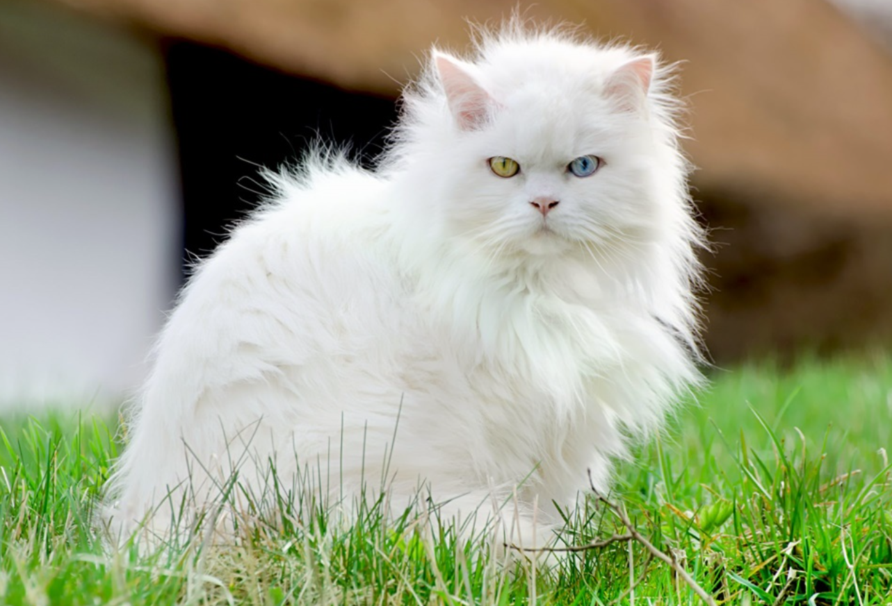
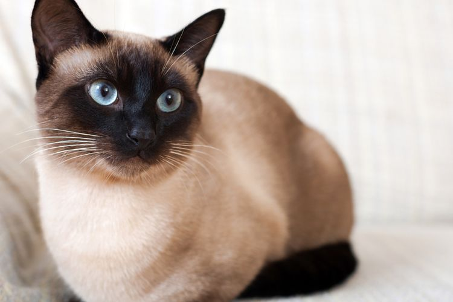
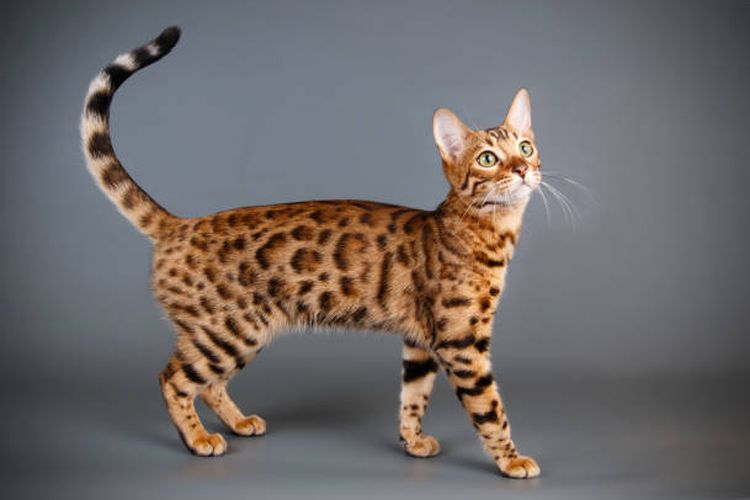
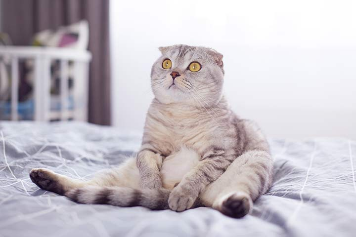
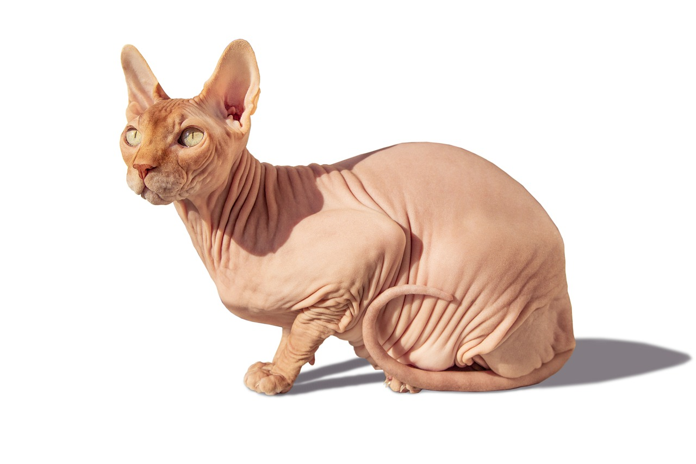
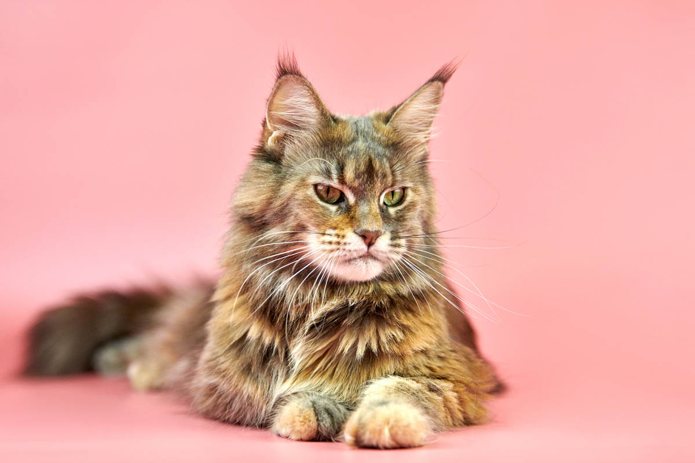
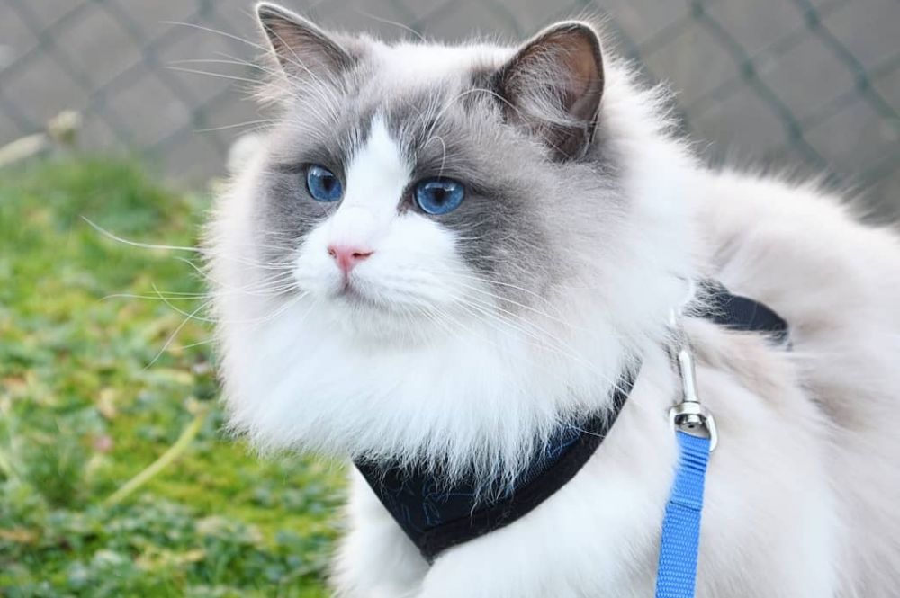
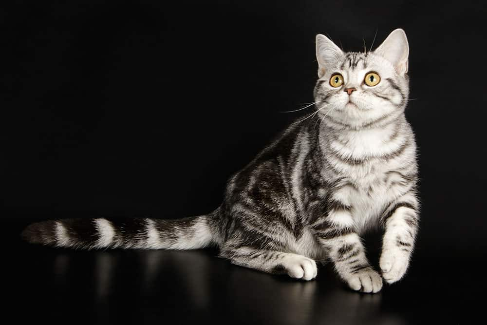

Kucing Anggora
Kucing Anggora adalah ras kucing asli Turki dengan bulu panjang,
tebal, dan lembut. Mereka memiliki tubuh ramping dan elegan dengan
kaki yang panjang dan ramping. Kucing ini memiliki wajah bulat
dengan mata besar berwarna hijau, biru, atau amber.
Selain kecantikannya, Kucing Anggora dikenal memiliki sifat yang
lembut, tenang, dan penuh kasih sayang terhadap pemiliknya. Mereka
sering dipilih sebagai hewan peliharaan karena kecantikan dan
sifatnya yang ramah terhadap manusia.
IDR 1JT - 5JT
Kucing Persia
Kucing Persia adalah salah satu ras kucing paling terkenal dan
populer di dunia. Kucing ini dikenal karena bulu panjang, tebal, dan
halus dengan bentuk wajah yang datar. Kucing Persia memiliki mata
besar dan hidung pesek.
Mereka biasanya memiliki sifat yang tenang dan santai serta sangat
menyukai kasih sayang. Ras kucing ini sangat cocok sebagai hewan
peliharaan di dalam ruangan dan membutuhkan perawatan rutin untuk
menjaga kebersihan bulu dan kesehatannya.
IDR 1JT - 10JT

Kucing Siam
Kucing Siam adalah salah satu ras kucing asli Thailand yang dikenal
karena tubuhnya yang ramping dan elegan dengan warna bulu yang
kontras antara tubuh dan kaki. Mereka memiliki wajah yang segitiga
dan mata biru cerah yang menonjol.
Kucing Siam juga memiliki suara yang cukup khas dan mereka sangat
aktif, cerdas, dan penasaran. Ras kucing ini sangat terikat pada
pemiliknya dan membutuhkan banyak perhatian dan permainan. Mereka
juga dapat dilatih untuk melakukan trik-trik tertentu.
IDR 2JT - 10JT

Kucing Bengal
Kucing Bengal adalah salah satu ras kucing yang terkenal karena bulu
mereka yang memiliki corak seperti harimau dan karakteristik fisik
yang mirip kucing liar. Mereka adalah hasil dari persilangan antara
kucing domestik dan kucing leopard Asia.
Kucing Bengal
memiliki tubuh yang kuat, ramping, dan atletis dengan bulu yang
pendek dan tebal. Mereka sangat aktif, cerdas, dan penyayang serta
dapat dilatih untuk melakukan trik-trik. Ras kucing ini juga dikenal
sangat ramah dan mudah beradaptasi dengan keluarga manusia.
IDR 7JT - 20JT

Kucing Scottish Fold
Kucing Scottish Fold adalah salah satu ras kucing yang memiliki
telinga kecil dan melengkung ke bawah sehingga terlihat seperti
"terlipat". Kucing ini berasal dari Skotlandia dan memiliki bulu
yang lebat dan halus dengan berbagai macam warna.
Kucing
Scottish Fold dikenal karena sifatnya yang lembut dan ramah terhadap
manusia. Mereka sangat penyayang, setia, dan senang bermain serta
sangat cocok sebagai hewan peliharaan keluarga. Namun, perlu
diperhatikan bahwa ras kucing ini juga dapat mengalami masalah
kesehatan pada telinganya karena karakteristik genetiknya.
IDR 7JT - 20JT

Kucing Sphynx
Kucing Sphynx adalah salah satu ras kucing yang paling terkenal
karena tidak memiliki bulu sama sekali. Mereka memiliki kulit yang
halus dan berketebalan sedang dengan warna yang beragam. Kucing
Sphynx memiliki bentuk tubuh yang unik dan terlihat seperti kucing
yang kurus dan atletis.
Mereka sangat aktif, cerdas, dan sosial serta sangat menyukai
perhatian dari manusia. Ras kucing ini sangat cocok untuk dipelihara
di dalam rumah karena tidak memiliki lapisan bulu yang menghasilkan
alergi bagi orang yang sensitif. Namun, karena kulitnya yang halus,
Kucing Sphynx membutuhkan perawatan khusus untuk menjaga kelembaban
kulitnya.
IDR 15JT - 30JT

Kucing Maine Coon
Kucing Maine Coon adalah salah satu ras kucing terbesar dan paling
populer di dunia. Mereka memiliki tubuh yang besar dan kuat dengan
bulu panjang, tebal, dan halus. Kucing Maine Coon memiliki bentuk
wajah yang segitiga dan telinga yang lebar serta ekor yang panjang
dan lebat.
Mereka dikenal karena sifatnya yang lembut,
penyayang, dan mudah bergaul dengan manusia. Kucing Maine Coon juga
sangat aktif dan cerdas, serta dapat dilatih untuk melakukan
trik-trik. Mereka sangat cocok untuk dipelihara sebagai hewan
peliharaan keluarga.
IDR 7JT - 25JT

Kucing Ragdoll
Kucing Ragdoll adalah salah satu ras kucing yang tenang, lembut, dan
ramah terhadap manusia. Mereka dikenal karena sifatnya yang sangat
penyayang dan sangat terikat pada pemiliknya. Kucing Ragdoll
memiliki tubuh yang besar dan berotot dengan bulu yang halus, lebat,
dan panjang dengan berbagai macam warna.
Mereka memiliki wajah yang lembut dengan mata biru besar dan telinga
yang lebar. Ras kucing ini sangat cocok sebagai hewan peliharaan
keluarga karena sifatnya yang ramah terhadap anak-anak dan hewan
lainnya serta tidak memerlukan perawatan yang rumit.
IDR 8JT - 20JT

Kucing American Shorthair
Kucing American Shorthair adalah salah satu ras kucing yang terkenal
di Amerika Serikat. Mereka memiliki tubuh yang atletis dan kuat
dengan bulu pendek dan tebal yang datang dalam berbagai warna.
Kucing American Shorthair dikenal karena sifatnya yang ramah,
tenang, dan mudah bergaul dengan manusia.
Mereka sangat
cocok sebagai hewan peliharaan keluarga karena dapat hidup di dalam
rumah atau luar ruangan. Selain itu, kucing ini juga tahan terhadap
penyakit dan umumnya memerlukan perawatan kesehatan yang minimal.
IDR 2JT - 8JT